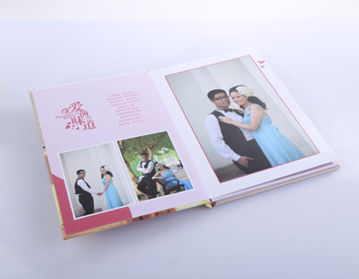

“照片书”又称“像片书”或“相片书”，是由大量照片或图片配以简短的文字的书。随着数码印刷技术的发展，自2009年起，已经成为一种可以个性化定制的影像产品。
上世纪90年代末，随着数码印刷技术的发展，使得单本印刷价格大幅下降，欧美国家影像企业，开始围绕照片业务进行全产业链构架，开发出个性化的相片书产品，消费者可以通过线上或线下进行个性相片书的订购，提供自己拍摄的照片或文字（记述拍摄照片时的心情、背景、日期、发生的故事等）后等待几天即可拿到一本属于自己的精美的个性相片书,当然这些在忆尔您也可以轻松实现。
照片书和传统相册有哪些区别呢，小编就来和大家普及一下：
1. 纸质 相册书纸质能够防水防污，但是太笨重，不易于管理，而照片书一般是单层铜版纸覆膜，平整光滑；
2. 装订 相册一般采用蝴蝶装帧，做工高档，保存时间长， 照片书采用车线装订，坚固，但是封面相对容易磨损；
3. 价格 相册价格很贵，影楼的价格大家都知道的，照片书就物美价廉，做工精良；
4. 相册 特别是结婚的相册，一般都会长久保存，但并不是经常翻动，照片书相对轻巧，茶余饭后，随意翻看，别有一翻滋味。
越来越多的人更倾向于照片书的原因就是，我们可以把日常生活照片以纸质的形式保存下来，而不是把影楼美化过的形象保存下来。 平常的幸福，更能打动人心。